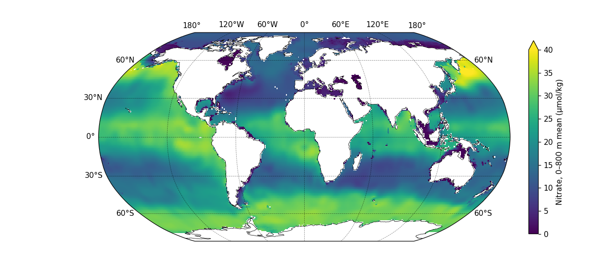
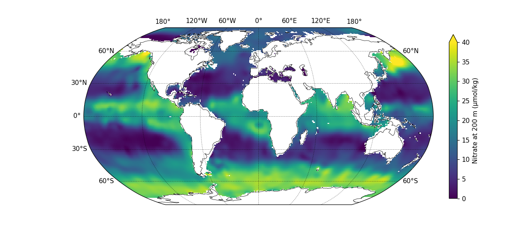
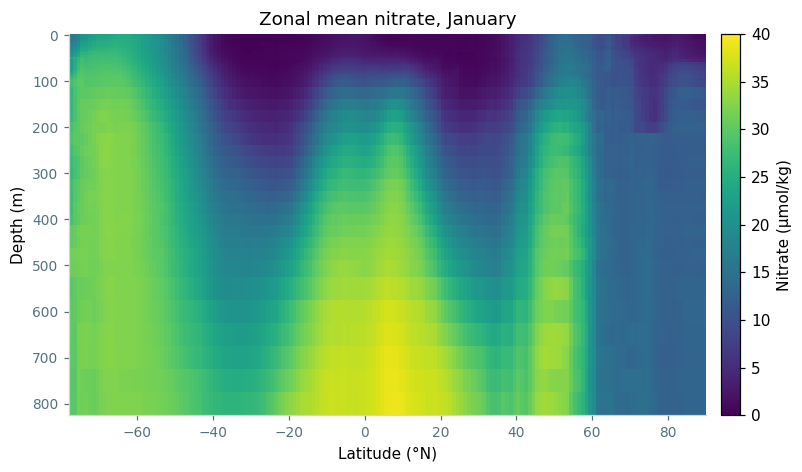
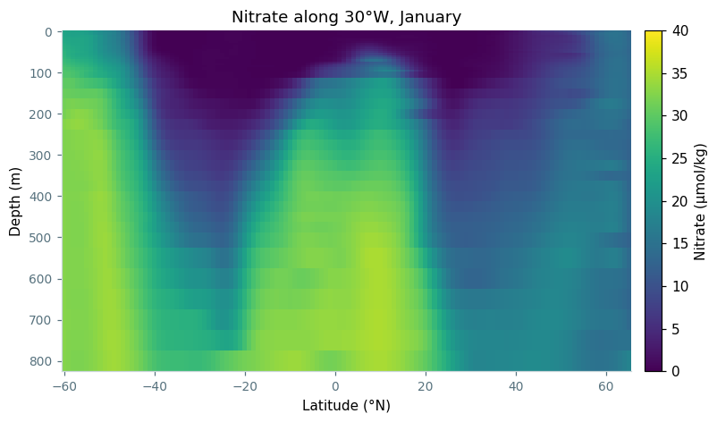
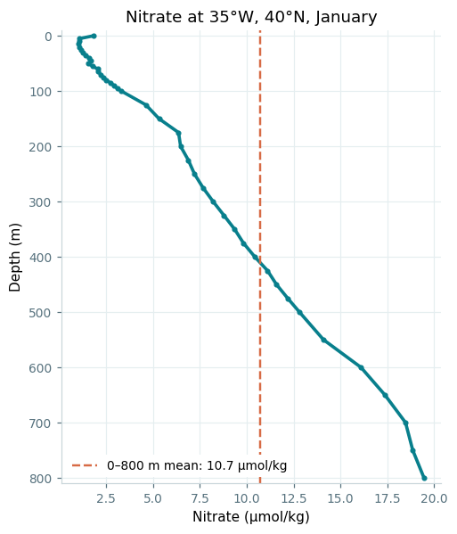

Average, section and sample the World Ocean Atlas through the water column, using January nitrate as the example.
This example uses January nitrate from the World Ocean Atlas 2023, NOAA's climatology of ocean properties, on a 1° grid. NOAA serves each month as a separate file over OPeNDAP, so this opens just the January one:
import nctoolkit as nc ds = nc.open_thredds("https://www.ncei.noaa.gov/thredds-ocean/dodsC/woa23/DATA/nitrate/netcdf/all/1.00/woa23_all_n01_01.nc") ds.subset(variables="n_an") ds.run()
Each monthly file covers the top 800 m on 43 standard depth levels. Along with the objectively analysed mean, n_an, the file carries other statistics such as the plain mean and the number of observations, and subset() keeps only the analysed field.
run() then fetches that field once. Every analysis below starts from a copy() of ds, so they all work from the local copy instead of each going back to the server.
vertical_mean() collapses the water column into one value per grid cell. fixed=True tells it that the depth levels are the same everywhere, which is true of a z-level product like this. pub_plot then maps the result:
vm = ds.copy() vm.vertical_mean(fixed=True) vm.pub_plot(colours="viridis", limits=[0, 40], legend="Nitrate, 0–800 m mean (µmol/kg)")

The depth levels are packed close together near the surface — each is 5 m apart down to 100 m, but 50 m apart below 500 m. vertical_mean() weights each level by the thickness of water it stands for, using the depth bounds stored in the file. That matters: at the point in the last section, the thickness-weighted mean is 10.7 µmol/kg, while a plain average of the 43 levels would give 6.6, because it over-counts the crowded surface levels.
Where the seafloor is shallower than 800 m, the mean covers only the water that is there.
An average merges every depth into one number. To see a single depth instead, use vertical_interp(), which interpolates every grid cell to the depths you ask for. As with vertical_mean(), fixed=True says the levels are the same everywhere:
d200 = ds.copy() d200.vertical_interp(levels=200, fixed=True) d200.pub_plot(colours="viridis", limits=[0, 40], legend="Nitrate at 200 m (µmol/kg)")

The World Ocean Atlas already has a level at exactly 200 m, so here vertical_interp() returns that level unchanged. It does real work at a depth between two levels: ask for 110 m, and each cell is interpolated linearly between the 100 m and 125 m levels. To get several depths at once, pass a list, such as levels=[50, 110, 200].
zonal_mean() averages around each line of latitude instead, which keeps depth intact and gives a latitude-by-depth section of the whole ocean:
zm = ds.copy() zm.zonal_mean()

import matplotlib.pyplot as plt def style(ax): ax.spines["top"].set_visible(False) ax.spines["right"].set_visible(False) ax.spines["left"].set_color("#c9d6da") ax.spines["bottom"].set_color("#c9d6da") ax.tick_params(colors="#56717d", labelsize=9) # a latitude-by-depth section, reused for the transect below def section(df, title): grid = df.pivot_table(index="depth", columns="lat", values="n_an") fig, ax = plt.subplots(figsize=(9, 4.5)) # anywhere without ocean, such as below the seafloor, shows as grey ax.set_facecolor("#d9dee0") mesh = ax.pcolormesh(grid.columns, grid.index, grid.values, cmap="viridis", vmin=0, vmax=40, shading="nearest") ax.invert_yaxis() style(ax) ax.set_xlabel("Latitude (°N)") ax.set_ylabel("Depth (m)") ax.set_title(title, fontsize=12) fig.colorbar(mesh, ax=ax, pad=0.02).set_label("Nitrate (µmol/kg)") return fig fig = section(zm.to_dataframe().reset_index(), "Zonal mean nitrate, January") fig.savefig("nitrate_zonal_mean.png", dpi=110, bbox_inches="tight")
To look at one basin on its own, to_transect() cuts a line through it. This is the same 30°W meridian as the transects example, extended south to 60°S, and because the dataset has depth levels, the transect keeps them:
tr = ds.copy() tr.to_transect(start=[-30, -60], end=[-30, 65], nsteps=126)

# section() is defined in the zonal mean plotting code above fig = section(tr.to_dataframe().reset_index(), "Nitrate along 30°W, January") fig.savefig("nitrate_transect.png", dpi=110, bbox_inches="tight")
Every point along this line, at every depth, has data. Most nearby meridians have gaps, where the line crosses the Azores or runs into shallow water near land.
Finally, regrid() with a single lon and lat interpolates the dataset to one location. Here that is 35°W, 40°N, in the middle of the North Atlantic, and the result is a vertical profile. A vertical_mean() of that profile gives the value the map above shows at the same place:
pt = ds.copy() pt.regrid(lon=-35, lat=40) pt_mean = pt.copy() pt_mean.vertical_mean(fixed=True)

df = pt.to_dataframe().reset_index() mean = pt_mean.to_dataframe().n_an.values[0] fig, ax = plt.subplots(figsize=(5, 6)) ax.plot(df.n_an, df.depth, color="#087f8c", linewidth=2.4, marker="o", markersize=3) ax.axvline(mean, color="#d76b45", linestyle="--", linewidth=1.6, label=f"0–800 m mean: {mean:.1f} µmol/kg") ax.set_ylim(810, -10) style(ax) ax.grid(color="#e5eef0", linewidth=0.8) ax.set_axisbelow(True) ax.set_xlabel("Nitrate (µmol/kg)") ax.set_ylabel("Depth (m)") ax.set_title("Nitrate at 35°W, 40°N, January", fontsize=12) ax.legend(fontsize=9, loc="lower left", facecolor="white", edgecolor="none", framealpha=1) fig.savefig("nitrate_profile.png", dpi=110, bbox_inches="tight")